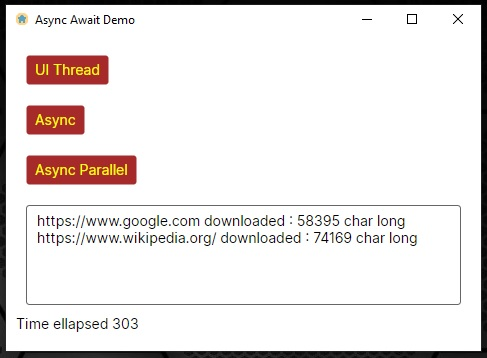

<Window xmlns="https://github.com/avaloniaui"
xmlns:x="http://schemas.microsoft.com/winfx/2006/xaml"
xmlns:d="http://schemas.microsoft.com/expression/blend/2008"
xmlns:mc="http://schemas.openxmlformats.org/markup-compatibility/2006"
xmlns:vm="using:UI.ViewModels"
mc:Ignorable="d" d:DesignWidth="800" d:DesignHeight="450"
x:DataType="vm:AsyncTestViewModel"
x:Class="UI.Views.Pages.AsyncTest"
WindowState="Maximized"
Icon="/Assets/Icons/home72.ico"
Title="Async Await Demo">
<Design.DataContext>
<vm:AsyncTestViewModel></vm:AsyncTestViewModel>
</Design.DataContext>
<StackPanel Margin="10">
<StackPanel Margin="10" Orientation="Vertical" Spacing="20" Grid.Row="0" Grid.Column="0">
<Button Command="{Binding UIClickCommand}">UI Thread</Button>
<Button Command="{Binding AsyncClickCommand}">Async</Button>
<Button Command="{Binding AsyncParallelClickCommand}">Async Parallel</Button>
</StackPanel>
<TextBox Margin="10" AcceptsReturn="True" Height="100" Grid.Row="1" Grid.Column="0" Text="{Binding Output}"></TextBox>
<TextBlock Text="{Binding ElapsedTime}"></TextBlock>
</StackPanel>
</Window>
Viewmodel
using CommunityToolkit.Mvvm.ComponentModel;
using CommunityToolkit.Mvvm.Input;
using System;
using System.Collections.Generic;
using System.Net;
using System.Threading.Tasks;
namespace UI.ViewModels;
public class WebsiteDataModel
{
public string Url { get; set; }
public string Data { get; set; }
}
public partial class AsyncTestViewModel : ViewModelBase
{
[ObservableProperty]
private string _output;
[ObservableProperty]
private string _elapsedTime;
private string _fullData { get; set; }
public AsyncTestViewModel()
{
Output = string.Empty;
_fullData = string.Empty;
ElapsedTime = string.Empty;
}
[RelayCommand]
private void UIClick()
{
_fullData = string.Empty;
Output = string.Empty;
ElapsedTime = string.Empty;
var watch = System.Diagnostics.Stopwatch.StartNew();
RunDownloadSync();
watch.Stop();
var ms = watch.ElapsedMilliseconds;
ElapsedTime = $"Time ellapsed {ms}";
}
[RelayCommand]
private async Task AsyncClick()
{
_fullData = string.Empty;
Output = string.Empty;
ElapsedTime = string.Empty;
var watch = System.Diagnostics.Stopwatch.StartNew();
await RunDownloadAsync();
watch.Stop();
var ms = watch.ElapsedMilliseconds;
ElapsedTime = $"Time ellapsed {ms}";
}
[RelayCommand]
private async Task AsyncParallelClick()
{
_fullData = string.Empty;
Output = string.Empty;
ElapsedTime = string.Empty;
var watch = System.Diagnostics.Stopwatch.StartNew();
await RunDownloadParallelAsync();
watch.Stop();
var ms = watch.ElapsedMilliseconds;
ElapsedTime = $"Time ellapsed {ms}";
}
private List<string> PrepareData()
{
List<string> websites = new List<string>();
websites.Add("https://www.google.com");
websites.Add("https://www.wikipedia.org/");
return websites;
}
private void RunDownloadSync()
{
List<string> websites = PrepareData();
foreach (string site in websites)
{
WebsiteDataModel results = DownloadWebsite(site);
ReportSiteInfo(results);
}
Output = _fullData;
}
private async Task RunDownloadAsync()
{
List<string> websites = PrepareData();
foreach (string site in websites)
{
WebsiteDataModel results = await Task.Run(() => DownloadWebsite(site));
ReportSiteInfo(results);
}
Output = _fullData;
}
private async Task RunDownloadParallelAsync()
{
List<string> websites = PrepareData();
List<Task<WebsiteDataModel>> tasks = new List<Task<WebsiteDataModel>>();
foreach (string site in websites)
{
tasks.Add(Task.Run(() => DownloadWebsite(site)));
}
var result = await Task.WhenAll(tasks);
foreach(var item in result)
{
ReportSiteInfo(item);
}
Output = _fullData;
}
private WebsiteDataModel DownloadWebsite(string url)
{
WebsiteDataModel data = new WebsiteDataModel();
WebClient client = new WebClient();
data.Url = url;
data.Data = client.DownloadString(url);
return data;
}
private void ReportSiteInfo(WebsiteDataModel data)
{
string str = $"{data.Url} downloaded : {data.Data.Length} char long {Environment.NewLine}";
_fullData += str;
}
}